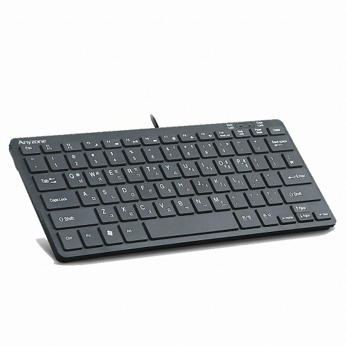
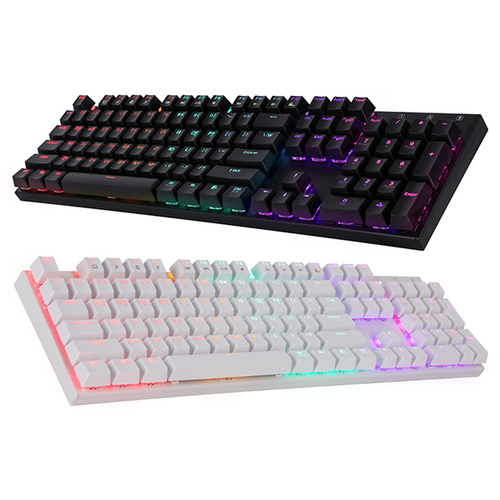
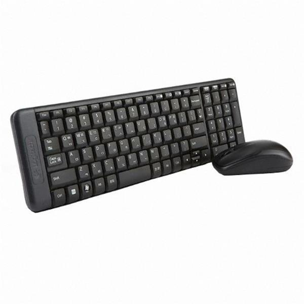
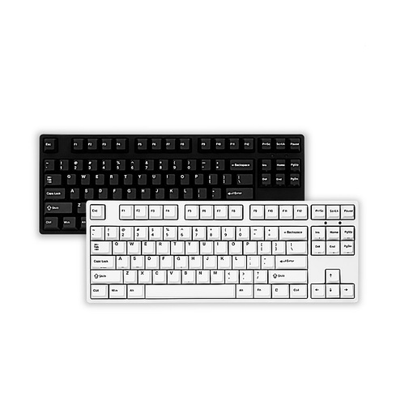

IT환경 구축안내
☆ 키보드 ☆
개발자라면 빼놓을수 없는 가장 많이 만지는 물건
노트북의 키보드가 충분히 쓸만하며 적응이 되었다면 키보드는 필요하지 않을 수도 있습니다.
하지만 노트북은 하드웨어 특성상 낮은 키만을 쓸수 없으며 기계식키보드가 적재된 노트북은 매우 적기 때문에 키보드를 추가로 이용할 수 있습니다.
특히 노트북 거치대를 활용한다고 하면 더욱 키보드가 절실해집니다.
키보드의 선택요소
1. 펜타그래프키보드
2. 기계식키보드
3. 무선키보드
4. 텐키리스키보드
1. 펜타그래프 키보드

상도아이앤티 Anyzone k400 유선 미니키보드 :제품구매링크
접이식 노트북거치대는 접이식 독서대와 같이 접었다 펼쳐서 노트북을 걸 수 있게 만들어주는 노트북스탠드입니다. 외부에 가져다니기 편하고 금속재질과 플라스틱재질이 있으며 대체로 금속재질이 더 많은 무게를 버팁니다. 일부 제품은 알루미늄 재질로 만들어서 노트북의 열기를 흡수하는데 보조 한다고 광고합니다.
2. 기계식키보드

ABKO hacker K640 :제품구매링크
거치형 노트북거치대는 개인용 퍼스널 컴퓨터를 대체하기 위하여 노트북을 사용하는 유저나 한 자리에서 장기간 동안 노트북을 사용하는 유저에게 매우 적합합니다. 대체로 매우 튼튼하고 노트북 거치대 중에서 가장 싼 거치대가 있는 형태입니다.
하지만 비싼 거치형 노트북스탠드도 존재하는데 이러한 경우는 조명, 쿨러의 고기능, 알림기능 등 다양한 기능이 탑재되어 있습니다.
거치형 노트북스탠드는 대체로 쿨러의 역할을 위하여 팬을 적재하는데 전기를 공급하면 한개 혹은 다수의 팬을 회전시켜 노트북하부에 공기흡입을 도와 노트북 온도를 낮추는데 도와주는 기능을 가집니다.
청축
누를때 소리가 있으며 걸리는 장치로 인하며 누르는 느낌이 확실함
게이밍용
갈축
누를때 소리내는 장치가 없으며 걸리는 장치는 있어서 누를때 확실한 느낌은 유지됨
게이밍용
적축
누를때 소리를 내는 장치도 걸리는 장치도 없어서 부드럽게 들어감
사무용
저소음 적축
적축처럼 소리를 내는 장치도, 걸리는 장치도 없지만 안쪽에 댐퍼를 설치하여 누를때 먹먹하고, 더 적은 소음을 발생하게함
사무용
3. 무선키보드

로지텍 MK230 :제품구매링크
무선키보드는 선이 없이 사용되어지는 키보드로써 대체로 동글을 통하여 무선으로 연결됩니다.
사무용도 특성상 무선마우스와 무선키보드가 합본되는 경우가 많고, 너무 많은 무선장비가 사용되면 간섭이 발생할 수도 있습니다.
4.텐키리스키보드

아콘 k77 텐키리스 무선 기계식 키보드 :제품구매링크
텐키리스 키보드는 우측의 텐키를 줄여 키보드의 길이를 줄인 키보드입니다.
텐키의 경우 자주 쓰이지 않거나 혹은 이동이 잦을때 키보드를 휴대한다면 텐키리스 키보드가 상당히 효율적이기 떄문에 수요가 있습니다.